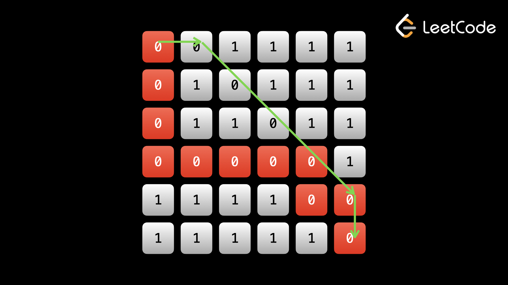

Как и в случае с деревьями, во многих задачах с графами не имеет большого значения, используете ли вы DFS или BFS, и редко бывают сценарии, когда DFS работает лучше, чем BFS — люди просто выбирают DFS, потому что его быстрее и чище реализовать, особенно рекурсивно. Любую проблему, которую мы рассмотрели в предыдущем примере, можно решить с помощью BFS.
Но есть некоторые проблемы, когда использование BFS явно лучше, чем использование DFS. В случае с деревьями это имело место, когда нас интересовали уровни деревьев. В графах это чаще всего тот случай, когда вас просят найти кратчайший путь.
Напомним, что в двоичных деревьях BFS посещает все узлы на глубине d, прежде чем посещать любой узел на глубине d + 1. BFS посещает узлы в соответствии с их расстоянием от корня.
В 99% случаев граф не будет иметь древовидной структуры. Но даже в этом случае действует та же логика. Представьте себе, что любой узел, с которого вы начинаете, является «корнем». Тогда соседи корня представляют следующий уровень, а соседи этих узлов представляют уровень после этого.
BFS на графе всегда посещает узлы в зависимости от их расстояния от начальной точки. Это ключевая идея BFS на графах: каждый раз, когда вы посещаете узел, вы должны достичь его за минимально возможное количество шагов с того места, где вы начали свой BFS.
Приведенное выше утверждение всегда справедливо для двоичных деревьев, даже если вы использовали DFS, поскольку существует только один возможный путь к любому узлу от корня. В графе может быть множество путей от заданной начальной точки до любого другого узла. Использование BFS гарантирует, что из всех возможных путей вы выберете самый короткий.
Мы реализовали DFS в основном с помощью рекурсии, которая использует стек под капотом. Чтобы реализовать BFS, мы будем использовать очередь (итеративно).
Пример 1: 1091. Кратчайший путь в
двоичной матрице.
Дана сетка двоичной матрицы размера n x n, верните длину кратчайшего свободного пути в матрице.
Если
четкого пути нет, верните -1. Чистый путь — это путь от верхней левой ячейки (0,
0) до нижней правой ячейки
(n — 1, n — 1), при котором все посещенные ячейки равны 0. Вы можете перемещаться
в 8 направлениях (вверх,
вниз). , влево, вправо или по диагонали).
Мы можем рассматривать матрицу как граф, где каждый квадрат является узлом, и все квадраты имеют до 8 ребер для соседних квадратов (вплоть до того, что квадраты на ребрах имеют меньше ребер из-за того, что потенциальные соседи находятся за пределами границ). В матрице может быть много путей, но нам нужен самый короткий. Помните: при обходе мы хотим посетить каждый квадрат не более одного раза, не только для эффективности, но и во избежание циклов. Если бы нам пришлось использовать DFS, мы бы не смогли найти кратчайший путь. Возьмем следующий пример:

Путь, отмеченный стрелками, — это оптимальный путь (7 квадратов), а красный путь — это путь, который мог бы произойти, если бы вы использовали DFS (11 квадратов). Как видите, красный путь длиннее и также «использует» квадраты оптимального пути, поэтому этот алгоритм не даст правильного ответа. Чтобы найти кратчайший путь, нам следует использовать BFS. С BFS каждый раз, когда мы посещаем узел, мы гарантируем, что достигли его за наименьшее количество возможных шагов. См. следующий пример:
Помните, когда мы рассматривали BFS на деревьях, и каждая итерация цикла while представляла уровень/глубину? Каждый раз, когда анимация выше обновляется, это новый «уровень» на графике. Каждый уровень имеет одинаковое расстояние от начала (0, 0), если вы выберете оптимальный путь. При работе с деревьями мы использовали цикл for внутри цикла while. Это произошло потому, что нас интересовали уровни в целом — мы хотели проанализировать каждый уровень отдельно (найти максимальный элемент и т. д.). Здесь нас не особо волнуют уровни в целом — мы просто хотим дойти до конца (n — 1, n — 1). Таким образом, нам не нужен цикл for, а только цикл while в очереди. Мы можем сохранить количество шагов, которые мы сделали с каждым узлом, и как только мы достигнем правого нижнего угла, мы узнаем, что у нас есть ответ. Напомним, это связано с тем, что когда мы впервые посещаем узел с помощью BFS, мы знаем, что должны были достичь его, пройдя минимально возможные шаги.
Альтернативно вы можете продолжать использовать формат задач двоичного дерева. Тогда вам не нужно будет хранить количество шагов, предпринятых на данный момент для каждого узла. Вы можете инициализировать переменную level перед запуском BFS и увеличивать его каждый раз, когда вы переходите на уровень выше (каждая итерация цикла while = один уровень). Когда вы встретите целевой узел (n - 1, n - 1), вы можете вернуть level.
В предыдущей статье мы видели график, представленный в виде матрицы. История этой задачи заключалась в том, что у нас были клетки суши, образующие острова. В этой задаче нас просят найти «ясный путь». Чистый путь — это путь, который начинается слева вверху, заканчивается справа внизу и содержит только 0.
Таким образом, у нас есть граф, в котором каждый квадрат со значением 0 является узлом, а ребра существуют между узлами, соседними по горизонтали, вертикали или диагонали.
Как показано на изображении выше, запуск DFS в левом верхнем углу и перемещение до правого нижнего угла может привести к неправильному ответу.
При использовании BFS каждый раз, когда мы посещаем узел, мы должны достичь его за наименьшее количество возможных шагов. Когда мы доходим до правого нижнего угла, это гарантирует, что мы сделали это за наименьшее количество шагов. Если мы свяжем шаги, предпринятые до сих пор, с каждым узлом, то мы сможем немедленно вернуться, как только достигнем правого нижнего угла.
Мы сохраняем дополнительное целое число с узлом в каждой записи очереди. Когда мы получаем node из очереди, мы также получаем steps. Когда мы помещаем соседей node в очередь, мы также помещаем steps + 1.
Реализация должна выглядеть очень знакомой. Мы используем вспомогательную функцию validи массив directions, чтобы сделать код чище, что является хорошей практикой для всех задач с матричным графом. BFS идентична итеративным реализациям DFS — каждая итерация в цикле while обрабатывает один узел. Единственная разница между DFS и BFS заключается в том, что мы используем очередь вместо стека.
def shortestPathBinaryMatrix(self, grid: List[List[int]]) -> int:
if grid[0][0] == 1:
return -1
def valid(row, col):
return 0 <= row < n and 0 <=col < n and grid[row][col]==0
n = len(grid)
seen = {(0, 0)}
queue = deque([(0, 0, 1)]) # row, col, steps
directions = [(0, 1), (1, 0), (1, 1), (-1, -1), (-1, 1), (1, -1), (0, -1), (-1, 0)]
while queue:
row, col, steps = queue.popleft()
if (row, col) == (n - 1, n - 1):
return steps
for dx, dy in directions:
next_row, next_col = row + dy, col + dx
if valid(next_row, next_col) and (next_row, next_col) not in seen:
seen.add((next_row, next_col))
queue.append((next_row, next_col, steps + 1))
return -1
Если реализация очереди эффективна, то удаление слева O(1) что делает работу на каждом узле О(1). Это означает, что временная сложность равна количеству узлов, что равно O(n2) Пространственная сложность также O(n2) как seen, может вырасти до такого размера.
Благодаря эффективной очереди BFS имеет ту же временную и пространственную сложность, что и DFS.
Шаги, предпринятые для реализации BFS, очень похожи на DFS. На каждом узле выполните некоторую логику, затем переберите соседей (в данном случае 8 направлений), проверьте, есть ли сосед в seen, а если нет, добавьте его в seen и в очередь. Основное отличие состоит в том, что мы используем очередь вместо стека.
Пример 2: 863. Расстояние K для
всех узлов в двоичном дереве.
Дан root двоичного дерева, узел target в дереве и целое число k,
верните массив значений всех узлов,
находящихся на расстоянии k от целевого узла.
В бинарном дереве есть только указатели от родителей к детям. Мы можем легко найти узлы на расстоянии k, находящиеся в поддереве целевого узла, но как насчет всех остальных узлов? Давайте преобразуем дерево в граф, назначив каждому узлу parent указатель. Тогда дерево становится неориентированным графом, и мы можем использовать простую BFS для поиска узлов на расстоянии k.
Мы можем выполнять родительские назначения, используя BFS или DFS — это не имеет особого значения, поэтому мы будем использовать DFS. Затем мы выполним BFS, начиная с target, и после того, как мы достигнем k шагов, вернем узлы в очередь.
Мы снова используем цикл for внутри цикла while, потому что на этот раз нам нужны все узлы в k-том уровне.
Примечание. В реализациях Java и C++ мы используем хэш-карту для запоминания родителей каждого узла. В
Python и JavaScript мы присваиваем объектам узла parent атрибут.
Назначение новых атрибутов, подобное этому, может рассматриваться как плохая практика, и вам следует быть
осторожными, делая это на собеседовании. Хэш-карту можно считать более «безопасным» подходом.
Если target корень, то эта проблема проста — мы просто делаем BFS, пока не достигнем k-го уровня, и тогда мы знаем, что наша очередь будет содержать все узлы ответа.
К сожалению, target может быть любой узел. Хуже того, мы рассматриваем не просто узлы целевого поддерева, а любой узел! Обычно мы не можем перейти к каким-либо узлам за пределами поддерева начального узла, потому что у нас нет возможности вернуться обратно к родительскому узлу.
Чтобы решить эту проблему, мы можем сначала выполнить стандартную DFS из корня и пометить каждый узел его родителем. Мы можем сделать это либо с помощью хеш-карты, либо изменив объект с помощью parent атрибута. Чтобы выполнить маркировку, мы используем parent аргумент вместе со стандартным аргументом node в нашей рекурсивной функции DFS. Мы устанавливаем родительский элемент node в parent, а затем, когда мы вызываем дочерние элементы, мы передаем node как parent.
Отметив родителей, мы создали неориентированный граф (так как теперь мы можем перейти к родителям и детям). Теперь мы можем просто выполнить BFS, начиная с target. Используя тот же формат, что и в задачах с двоичным деревом, каждая итерация цикла while обрабатывает целый уровень. После k итераций, мы знаем, что наша очередь будет содержать все узлы ответа.
def distanceK(self, root: TreeNode, target: TreeNode, k: int) -> List[int]:
def dfs(node, parent):
if not node:
return
node.parent = parent
dfs(node.left, node)
dfs(node.right, node)
dfs(root, None)
queue = deque([target])
seen = {target}
distance = 0
while queue and distance < k:
current_length = len(queue)
for _ in range(current_length):
node = queue.popleft()
for neighbor in [node.left, node.right, node.parent]:
if neighbor and neighbor not in seen:
seen.add(neighbor)
queue.append(neighbor)
distance += 1
return [node.val for node in queue]
И DFS, и BFS выполняют постоянную работу на каждом узле и посещают каждый узел не более одного раза. Поэтому мы имеем временную и пространственную сложность O(n) (пространство поступает из стека вызовов рекурсии, когда мы назначаем родителей, очередь seen).
Пример 3: 542.01 Матрица
Дана двоичная матрица mat размером m x n (каждый элемент равен 0 или
1),
найдите расстояние до ближайшего 0
для каждой ячейки. Расстояние между соседними ячейками (по горизонтали или вертикали) равно 1.
Например, дан mat = [[0,0,0],[0,1,0],[1,1,1]], верните [[0,0,0],[0,1,0], [1,2,1]].
Для всех 0 расстояние равно 0, поэтому нам не нужно его менять. Для всех 1 нам нужно найти ближайший 0. Один из способов решения этой проблемы — выполнить BFS для каждой 1, которая останавливается при обнаружении первого 0 — но это было бы очень неэффективно. Представьте, если бы у вас была огромная матрица, состоящая всего из 1. Временная сложность будет O(m2 * n2) (каждый BFS стоит O(m⋅n), и нам понадобится O(m⋅n) различных BFS, если вся матрица равна только 1, за исключением одного 0 в углу). Можем ли мы найти подход с линейным временем, позволяющий избежать многократного посещения одной и той же площади?
Вместо того, чтобы выполнять BFS с единиц, что, если мы начнем с нулей? Если у нас есть квадрат x со значением 1, а ближайший к нему квадрат со значением 0 — это y, то не имеет значения, пройдем ли мы от x -> y или y -> x. Если мы выполняем BFS, начиная со всех нулей, всякий раз, когда мы сталкиваемся с 1, мы знаем, что текущее количество шагов является ответом на эту 1. Использование seen предотвратит переопределение ответа.
У нас есть еще один матричный граф. Мы уже знакомы с тем, как преодолевать их с помощью таких инструментов, как valid и directions.
Важное наблюдение: нет никакой разницы между началом с 1 и поиском 0 или началом с 0 и поиском 1.
Допустим, вы фокусируетесь на цифре 1 в квадрате x. Мы делаем BFS и находим ближайший 0 в квадрате y.
Теперь давайте попробуем запустить BFS с каждого 0 в поисках x. Выполнив множество BFS, вы обнаружите, что минимальное расстояние было y.
Это приводит нас к нашему решению. Во всех примерах BFS, которые мы рассматривали до сих пор в курсе, мы инициализируем queue только с одним узлом — узлом, с которого запускаем нашу BFS. Этот единственный узел представлял собой 0-th уровень - узлы, находящиеся на расстоянии 0 от источника. Ничто не мешает нам иметь несколько узлов в 0-th уровень.
Мы сказали, что с BFS каждый раз, когда мы посещаем узел, мы делаем это за наименьшее количество
возможных шагов от источника.
«Источник» на самом деле это O-th
уровень - не один узел. Просто до сих пор мы рассматривали только задачи, в которых
0-th
уровень имел только один узел.
В этой задаче «источником» может быть любой узел со значением 0. Мы делаем это, инициализируя queue со всеми 0 узлами. Опять же, мы должны связать шаги, предпринятые на данный момент (уровень), с каждым узлом. По определению BFS, каждый раз, когда мы посещаем узел, мы делаем это за наименьшее количество шагов, начиная с 0, а это именно то, чего требует проблема. Используя seen, мы не будем переопределять уже найденные кратчайшие расстояния.
def updateMatrix(self, mat: List[List[int]]) -> List[List[int]]:
def valid(row, col):
return 0 <= row < m and 0 <=col < n and mat[row][col]==1
# if you don't want to modify the input, you can create a copy at the start
m = len(mat)
n = len(mat[0])
queue = deque()
seen = set()
for row in range(m):
for col in range(n):
if mat[row][col] == 0:
queue.append((row, col, 1))
seen.add((row, col))
directions = [(0, 1), (1, 0), (0, -1), (-1, 0)]
while queue:
row, col, steps = queue.popleft()
for dx, dy in directions:
next_row, next_col = row + dy, col + dx
if (next_row, next_col) not in seen and valid(next_row, next_col):
seen.add((next_row, next_col))
queue.append((next_row, next_col, steps + 1))
mat[next_row][next_col] = steps
return mat
Этот алгоритм повышает временную сложность до O(m⋅n), потому что BFS теперь посещает каждую клетку только один раз и каждый раз выполняет постоянный объем работы. Пространственная сложность также O(m⋅n) для очереди и seen.
Пример 4: 1293.
Кратчайший путь в сетке с устранением препятствий
Вам дана сетка целочисленной matrix размером m x n, где каждая ячейка равна либо
0 (пусто), либо 1
(препятствие). Вы можете перемещаться вверх, вниз, влево или вправо от пустой ячейки до нее за один шаг.
Найдите минимальное количество шагов, которое необходимо пройти из левого верхнего угла в правый нижний
угол, учитывая, что вы можете устранить не более k препятствий. Если это невозможно, верните
-1.
Эта проблема почти такая же, как и первый пример, который мы рассмотрели в этой статье. У нас есть двоичная матрица, нам разрешено пройти по одному из чисел, и нам нужно найти кратчайший путь сверху слева направо вниз. Отличие этой задачи в том, что нам разрешено устранить до k препятствий.
Устранить препятствие — то же самое, что пройти через него. Мы можем добавить еще одну переменную состояния remain, которая показывает, сколько удалений у нас осталось. На каждом квадрате, если сосед является препятствием, мы все равно можем дойти до него, если remain > 0.
Сначала убедитесь, что вы полностью понимаете решение первой проблемы, которую мы рассмотрели в этой статье.
Эта проблема имеет два основных отличия. Во-первых, мы не можем двигаться по диагонали (это тривиально, мы просто изменяем directions, чтобы не включать диагональные дельты). Во-вторых, нам разрешено ходить на клетки с 1, но только до k.
Напомним, что когда мы рассматривали двоичные деревья, мы иногда передавали в нашу функцию dfs аргументы, отличные от node. Именно так мы связали важную информацию с каждым узлом. Например, когда мы смотрели на сумму пути, мы передавали аргумент curr, который представлял собой сумму пути, который мы прошли на данный момент.
В первом и третьем примерах этой статьи мы связали текущий уровень (как целое число spans) с каждым узлом.
Идея связывания дополнительной информации с узлами очень распространена и полезна. В этой задаче разрешено убрать до k препятствий на заданном пути. Мы можем использовать переменную remain, чтобы указать, сколько удалений осталось на текущем пути. Первоначально мы начинаем с верхнего левого угла remain = k. Для каждой пары (node, remain) мы рассматриваем соседей как обычно. Если сосед равен 0, то мы просто переходим к нему без изменения remain. Если сосед равен 1, мы можем перейти к нему, но мы израсходуем одно из наших удалений, поэтому передаем remain - 1 с соседом. Конечно, мы можем сделать это только в том случае, если remain > 0.
Мы использовали seen, чтобы избежать повторного посещения одного и того же узла. В действительности seen фактически мешает нам побывать в одном и том же состоянии дважды. Просто мы рассмотрели только задачи, в которых node полностью описывает состояние. Нам нужно сохранить (node, remain) в seen, а не просто в node.
def shortestPath(self, grid: List[List[int]], k: int) -> int:
def valid(row, col):
return 0 <= row < m and 0 <=col < n
m = len(grid)
n = len(grid[0])
queue = deque([(0, 0, k, 0)])
seen = {(0, 0, k)}
directions = [(0, 1), (1, 0), (0, -1), (-1, 0)]
while queue:
row, col, remain, steps = queue.popleft()
if row == m - 1 and col == n - 1:
return steps
for dx, dy in directions:
next_row, next_col = row + dy, col + dx
if valid(next_row, next_col):
if grid[next_row][next_col] == 0:
if (next_row, next_col, remain) not in seen:
seen.add((next_row, next_col, remain))
queue.append((next_row, next_col, remain, steps + 1))
# otherwise, it is an obstacle and we can only pass if we have remaining removals
elif remain and (next_row, next_col, remain - 1) not in seen:
seen.add((next_row, next_col, remain - 1))
queue.append((next_row, next_col, remain - 1, steps + 1))
return -1
Мы сказали, что временная сложность графовых алгоритмов равна O(nodes+edges). Аргументом было то, что мы никогда не посещали узел более одного раза. Технически мы должны использовать s вместо nodes, где s обозначает количество состояний, и мы никогда не посещаем состояние более одного раза из-за того, что он уже в seen.
Просто для всех проблем, которые мы рассмотрели до сих пор, node полностью описывал состояние. Поэтому у нас всегда было s=nodes.
В этой задаче у нас есть две переменные, представляющие состояние — (node, remain). Есть значения m⋅n для узла и значения k для оставшихся. Это дает нам m⋅n⋅k состояний
Работа, совершаемая в каждом состоянии, равна O(1), что дает нам временную сложность О(м⋅n⋅k). Пространственная сложность такая же, как seen, растет линейно с количеством состояний.
Пример 5: 1129. Кратчайший путь с чередующимися цветами
Вам дан ориентированный граф с n узлами, помеченными от 0 до n-1.
Ребра в этом графе красные или
синие. Вам даны redEdges и blueEdges, где redEdges[i] и
blueEdges[i] оба имеют формат [x, y],
обозначающий ребро от x до y соответствующего цвета. Нужно вернуть массив
ans длины n, где answer[i] -
длина кратчайшего пути от 0 до i, где цвета цвета ребер чередуются, или
-1, если пути не существует.
В этой задаче мы начинаем с узла 0 и хотим найти кратчайший путь ко всем остальным узлам. Обычно это легко сделать с помощью простой BFS с переменной steps. Однако у нас есть дополнительное ограничение: края, которые мы пересекаем, должны иметь чередующийся цвет. Давайте назначим RED = 0 и BLUE = 1. Когда мы выполняем BFS, мы можем сохранить либо RED, либо BLUE вместе с узлом, чтобы указать, какого цвета было последнее ребро. Затем мы можем выполнить BFS, начиная с (0, RED) и (0, BLUE).
Каждый раз, когда мы пересекаем ребро, нам нужно сначала убедиться, что мы рассматриваем только ребра правильного цвета, а затем при обходе нам нужно переключить RED <-> BLUE.
Один хитрый трюк для переключения между 1 и 0 — это f(x) = 1 - x. f(1) = 0 и f(0) = 1.
Всякий раз, когда мы вводим новые переменные состояний, нам необходимо также добавлять эти переменные в seen. Поэтому мы рассматриваем (node, color) как одно состояние и сохраняем в seen
В предыдущем примере мы увидели, насколько ценным может быть связывание дополнительных данных с узлом.
У этой задачи простая предпосылка: начните с узла 0 и найдите кратчайшее расстояние до каждого другого узла. На обычном графе мы могли бы просто связать steps, предпринятые с каждым узлом, и выполнить BFS, начиная с 0.
Однако у нас есть дополнительное ограничение - мы должны чередовать цвета. Для каждого состояния мы можем включить переменную color,указывающую цвет следующего ребра, которое мы должны использовать. Затем когда мы перебираем соседей, мы учитываем только края color. Когда мы помещаем соседа в очередь, мы помещаем в цвет, противоположный color (помещаем в красный, если color = blue и в синий, если color = red).
На входе граф представляет собой массив ребер, поэтому нам нужно построить граф хэш-карты. Обычно мы хотим, чтобы graph[node] имел доступ ко всем соседям node. Мы можем добавить один дополнительный слой, чтобы graph[node][color] давал нам всех соседей node, доступ к которым осуществляется через ребро color.
Теперь мы запускаем BFS с узла 0, учитывая оба цвета. Это означает, что мы начинаем с queue = [(0, 0, 0), (0, 1, 0)]. Каждый элемент представляет собой (node, color, steps). В предыдущем примере мы видели, что изначально очередь представляет собой O-th уровень и может иметь любое число состояний. Мы инициализируем переменную ответа ans, которая представляет собой массив длины n, и обновляем ее при выполнении BFS.
Чтобы сделать реализацию более понятной, мы можем использовать целые числа 0 и 1 для представления цветов. Не имеет значения, какой цвет равен 0, а какой - 1. Когда мы помещаем соседа в очередь и хотим поменять цвет, мы можем использовать трюк 1 - color, как упоминалось выше. Помните, поскольку наше состояние (node, color) мы можем посетить узел дважды, по одному разу для каждого цвета. Вот почему seen теперь двумерно.
def shortestAlternatingPaths(self, n: int, redEdges: List[List[int]], blueEdges: List[List[int]]):
RED = 0
BLUE = 1
graph = defaultdict(lambda: defaultdict(list))
for x, y in redEdges:
graph[RED][x].append(y)
for x, y in blueEdges:
graph[BLUE][x].append(y)
ans = [float('inf')] * n
queue = deque([(0, RED, 0), (0, BLUE, 0)])
seen = {(0, RED), (0, BLUE)}
while queue:
node, color, steps = queue.popleft()
ans[node] = min(ans[node], steps)
for neighbor in graph[color][node]:
if (neighbor, 1-color) not in seen:
seen.add((neighbor, 1 - color))
queue.append((neighbor, 1 - color, steps + 1))
return [x if x != float('inf') else -1 for x in ans]
Количество состояний - это произведение диапазонов каждой переменной состояния. Здесь диапазон color всегда равен 2, поэтому он не влияет на временную сложность. Это дает нам стандартную временную сложность O(n + e), где e - общее количество ребер (оба цвета).
Пространственная сложность одинакова для graph, seen и queue.
Как мы видим, проблемы BFS обычно имеют один и тот же формат реализации. Вам просто нужно определить: что такое узлы, что такое ребра, нужны ли вам переменные состояния, кроме узла, и где должна начинаться BFS? Проверьте свои знания, решая предстоящие практические задачи.